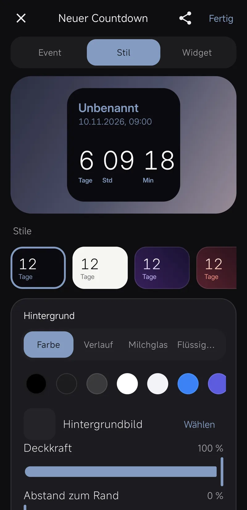
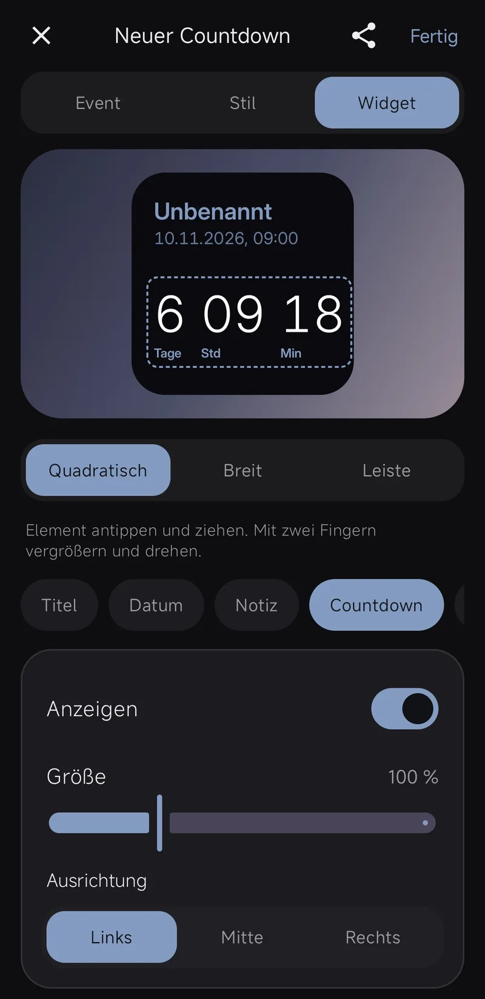

So baust du dein Widget
Bis wann – oder seit wann.
Ein Countdown bis zum Termin oder „Seit“, etwa seit wann du deinen Scooter hast. Jahre, Monate, Wochen bis Sekunden, frei kombiniert.
Farbe, Verlauf oder Glas.
Hintergrund, Zahlen und Text bekommen je eine Farbe, einen Verlauf, Milch- oder Flüssigglas. Dazu neun Schriften, vier Stärken, Kontur und Schatten.
Alles dorthin, wo du willst.
Titel, Datum, Countdown und bis zu drei Fotos ziehst du im Widget an ihren Platz. Mit zwei Fingern vergrößern und drehen.

